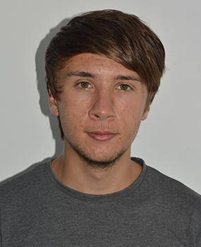

My name is Oliver Heib and I come from a small town in Greater Manchester.
I am currently studying Computer Science at Manchester Metropolitan University after being interested in programming since taking computing for my GCSE. I am currently exploring the world of Linux user graphics with GTK and QT.
My current ongoing projects are a Comic which is a Si-Fi comic following a character called Coda Radel who I have bee working on for a while and a fantasy RPG in the unity engine to create a Morrowind-esk experience as Morrowindis one of my favourite games.